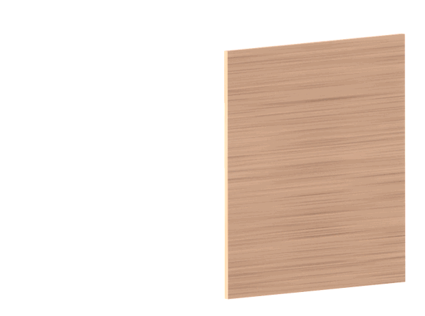
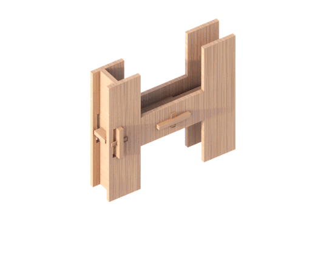
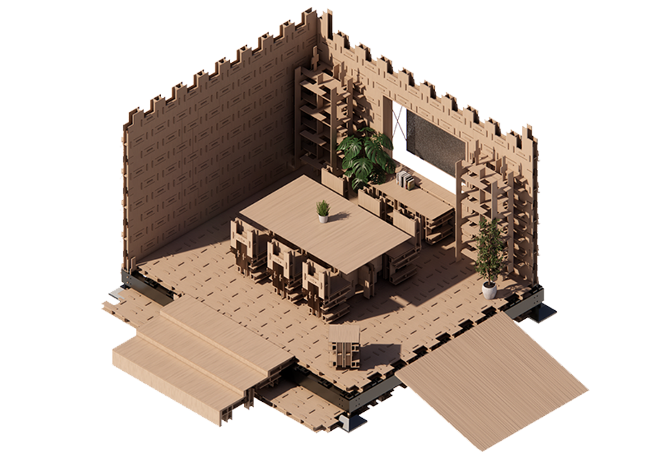
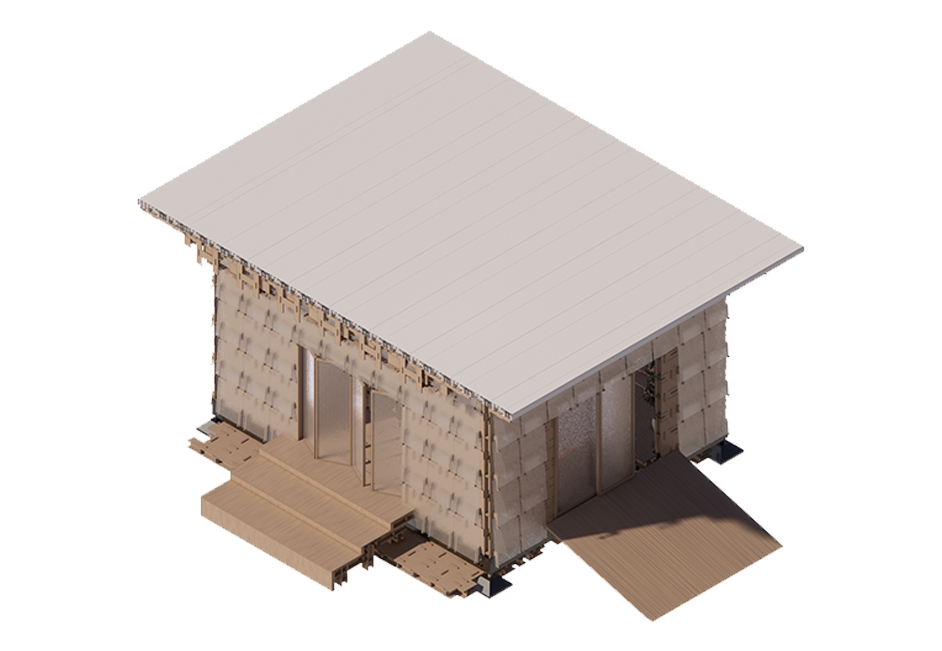

This project is a modular "U-Build" concept
designed with flexibility and convertibility
in mind. We utilized a single H-shaped
element
as the foundation for
constructing the entire
building, aiming
to create versatile working spaces
suitable for university campuses.
However, the system can be easily
adapted to
various other settings.
In line with our goals
of affordability and
sustainability,
we used plywood sheets
,carefully cut to
minimize waste
and maximize efficiency.
▾

Each module detail
▾

▾

Back to timeline